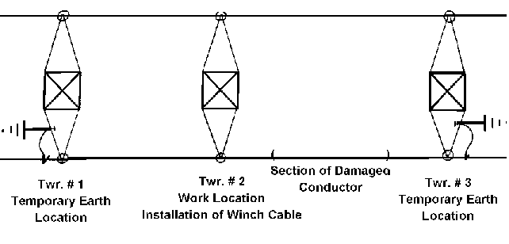
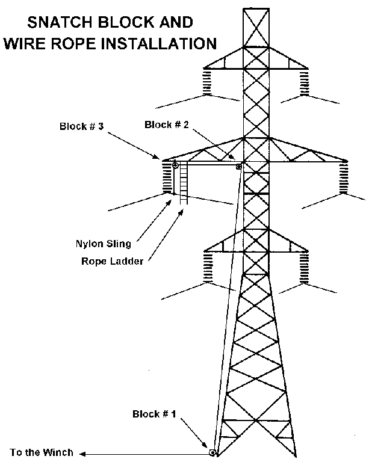
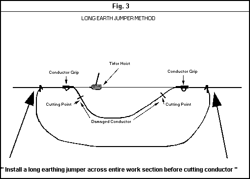
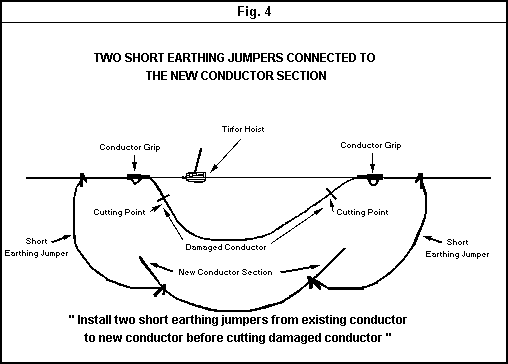
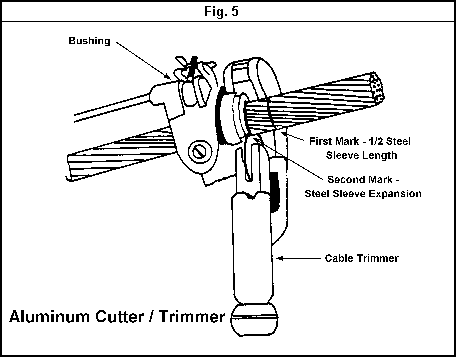
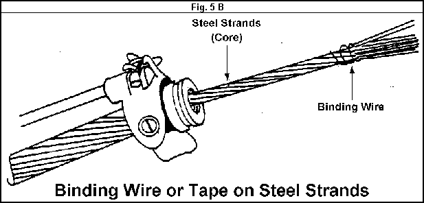
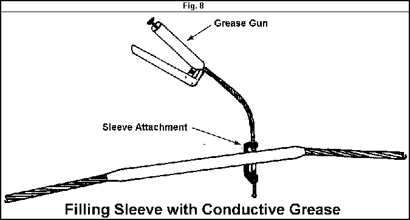

| Transmission Lines |
Technical Procedure |
Equipment:
Long Section of a TL Conductor
Procedure:
Replacing a Long Section of
a Damaged Conductor Procedures
|
|
|
|||
|
Equipment: |
Document No.: TL-015-r0 | |||
| Issued to: Networks | ||||
| Status: | ||||
|
Procedure: |
Date Approved 29 Dec.1997 | |||
| Date to be Reviewed: Dec. 2002 | ||||
Introduction
The purpose of this procedure is to provide detailed instructions on a safe method for replacing a Long section of Damaged Conductor.
This procedure was developed by EETC TL engineers at zones using their background field experience and EETC documentation to create this procedure.
Safety Precautions
Tools and Equipment
3 Handlines
1 Complete Fall Arrest Equipment, 1 Rope Ladder
1 Complete Temporary Earthing Equipment
1 Wire Rope Cable fitted with conductor clamps on both ends
1 Tirfor Hoist,
1 Bulldozer or Bulldozer Winch or Large Truck
3 Snatch Blocks, 1 Hydraulic Press and Dies
1 Nylon Sling, 2 Conductor Grips
4 Steel Slings, 6 Shackles
1 Ratchet Cutters, 1 Steel Conductor Brush
1 Aluminum Cutters / Trimmers
2 Aluminum Sleeves, 1 Measuring Ruler
1 Potential Indicator, 2 Steel Sleeves
2 Bandage Ties or Tape
Work to be Carried Out
Obtain a work permit on both circuits of the tower that you will work on.
Climb the towers, using approved fall protection, where temporary earths will be installed taking care to maintain the minimum limits of approach to the conductor.
Install the hand-line on the tower and raise the potential indicator.
Verify the isolation of both circuits on the tower.
Install temporary working earths on the circuit that you will be working on at the locations as shown in (FIGURE # 1) to ensure that the conductor will be properly earthed on both sides of the work location tower.

Figure 1: Temporary Tower Earth Locations
Climb the work location tower using approved fall arrest procedures and install a handline in an appropriate position.
# 1 at the tower leg nearest the footing and diagonal member.
# 2 on the tower shaft at the arm connection.
# 3 at the end of the tower arm directly above the suspension clamp.

Figure 2
Install the wire rope cable through the snatch blocks as shown in Figure 2.
As one lineman holds the weight of the cable on the tower arm, another lineman descends the rope ladder and attaches the free end of the wire rope cable to the conductor by using a nylon sling and shackle as a choker.
Attach the other end of the wire rope cable to the bulldozer, bulldozer winch or heavy truck.
Take up tension on the wire rope cable by advancing the vehicle or the winch until the suspension insulators hang slack.
The lineman on the rope ladder then disconnects the suspension clamp from the bottom insulator or insulator rod.
NOTE: If the conductor that is being lowered must pass by another tower arm and conductor, a tag line should be attached to the conductor to pull it by the arm by applying horizontal tension until it is clear. Also note that if the conductor that is being lowered to the ground is any other than the bottom phase conductor that it may have to be lowered from two tower locations in order to reach the ground for repair. These procedures must be anticipated prior to installing the temporary earth locations.
Measure the distance of the damaged conductor and mark the cutting points with tape.
Measure and cut the new conductor section to the exact same length.
Install two conductor grips and the tirfor hoist on the conductor outside of the cutting marks by approximately two meters to allow for cleaning and sleeving.
Take up tension on the tirfor hoist until the damaged conductor section between the two grips becomes slack.
Before cutting the damaged conductor section, temporary earthing jumpers must be installed across the entire conductor section to ensure that no induced potential voltage or current arises between two open points.


After either earthing jumper method has been applied and checked for continuity, prepare to cut the damaged conductor by applying a tape bandage approximately 1.5 meters outside of the cutting marks to prevent the existing conductor from unraveling. Cut the damaged conductor at the cutting marks and remove the damaged section.
Slide the aluminum sleeve on both ends of the new conductor section.
Clean the aluminum strands of all 4 conductor ends with emery paper.
Measure and mark the distance to cut the aluminum strands to expose the steel strands by a distance equal to half the length of the steel sleeve plus 5 % of the entire steel sleeve length. This will allow for steel expansion while pressing. (See Figure 5A).

Wrap a tape bandage around both
ends of the steel strands and slide the steel strands inside the steel
sleeve. Remove the tape bandage and insert the steel strands fully into the
steel sleeve until both conductor ends meet in the center of the sleeve. See (Figure
5 B

.
Measure the length of the aluminum sleeve and mark the conductor on both sides of the steel sleeve to ensure that the aluminum sleeve will be centered appropriately over the steel sleeve.
Slide the aluminum sleeve over the conductor to line up with each mark accordingly.
Using the hydraulic press, begin pressing the aluminum sleeve by centering the die over
the filler hole and outward to the end of the aluminum sleeve. Overlap each press by 10
%

When the aluminum sleeve has been completely pressed, fill the sleeve cavity with conductive grease as shown in (FIGURE # 8).
Gradually release the tirfor hoist to transfer the tension to the new conductor line section.
Remove the tirfoe hoist and grip assembly.
Remove the temporary earth jumper or jumpers from the repaired conductor section.
Raise the repaired conductor section using the winch or vehicle.
Attach the suspension clamp to the insulator string.
Release the wire rope cable from the conductor and lower it to the ground on the hand-line.
Remove the snatch blocks and rope ladder and lower them to the ground on the hand-line.
Advise the crew that the temporary earths on the adjacent towers will be removed.
Remove the temporary earths on the adjacent towers and lower them to the ground on the hand-line.
Descend the towers using approved fall arrest and remove the fall arrest equipment from the towers.
Close the work permit.